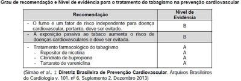
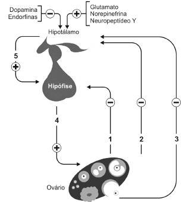
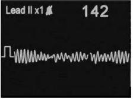
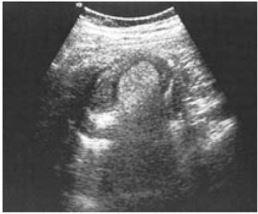
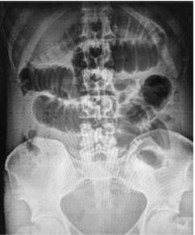
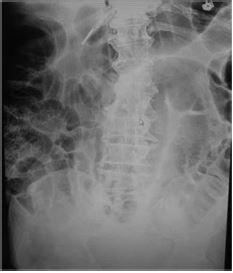
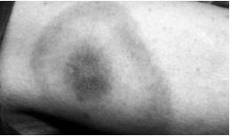
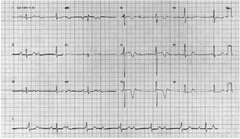
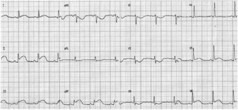

Questão 1 · Rastreamento mamográf ico · 4000140518As recomendações do Ministério da Saúde para rastreamento do câncer de mama incluem
A estímulo ao ensino do autoexame como método de rastreamento do câncer de mama.
B mamografia bienal em mulheres com menos de 50 anos.
C mamografia anual em mulheres com 75 anos ou mais.
D mamografia bienal em mulheres com idade entre 50 e 69 anos.
E mamografia bienal em mulheres com idade entre 60 e 69 anos.
Questão 2 · Medicina Preventiva · 4000140517Considere o quadro abaixo: O nível de evidência A significa dados obtidos

A a partir de metanálise pouco robusta, a partir de um único estudo randomizado ou de estudos não randomizados.
B a partir de múltiplos estudos randomizados de bom porte, concordantes e/ou de metanálise robusta de estudos clínicos randomizados.
C de opiniões consensuais de especialistas.
D a partir de relatos de casos concordantes.
E a partir de busca sistemática.
Questão 3 · Avaliação laboratorial do perf il lipídico · Cardiologia · 4000140516Na avaliação lipídica de paciente submetido à coleta de sangue sem jejum, o correto é
A repetir o exame, em jejum de 8 horas, pois os valores de colesterol total ficam alterados sem jejum, ainda que, níveis de HDL-c, não HDL-c e LDL-c não sofram influência do estado alimentar.
B instauração imediata de tratamento, caso os níveis de triglicérides estiverem acima de 300 mg/dL (Grau de Recomendação: IIa; Nível de Evidência: C).
C avaliar o resultado do perfil lipídico do paciente, de acordo com a indicação do exame e o estado metabólico, sem levar em conta a estratificação de risco.
D solicitar nova avaliação de triglicérides com jejum de 12 horas se a concentração desses estiver acima de 440 mg/dL.
E refazer o exame, em jejum de 8 horas, pois o perfil lipídico completo não pode ser coletado sem jejum.
Questão 4 · Inf ectologia · 4000140515A Instrução Normativa, referente ao Calendário Nacional de Vacinação de 2020, traz a seguinte alteração:
A Ampliação da faixa etária, de pessoas que não receberam vacina tríplice viral, de 30 a 49 anos, para intervalo de 30 a 59 anos.
B Ampliação da faixa etária preferencial a ser vacinada contra influenza, com inclusão de adultos acima de 50 anos.
C Inclusão de nova vacina meningocócica ABCD, com reforço em adolescentes de 11 a 14 anos.
D Inclusão de vacina meningocócica ACWY aos 3 meses, com reforço aos 19 anos de idade.
E Inclusão de meninos, aos 9 anos de idade, na vacinação contra HPV.
Questão 5 · Inf ectologia · 4000140514Segundo o pelo SARS-CoV-2:
A Gestação.
B Obesidade grave.
C Câncer.
D Doença renal crônica.
E Demência.
Questão 6 · Medicina Preventiva · 4000140513NÃO é princípio que rege a Medicina de Família:
A O Médico de Família e Comunidade é um profissional treinado para atender os problemas de saúde mais comuns de uma localidade.
B A prática da Medicina de Família é influenciada pela comunidade.
C O Médico de Família e Comunidade é um recurso de uma população definida.
D A Medicina de Família se condiciona à disponibilidade de tecnologia.
E A relação profissional-pessoa é fundamental no desempenho do Médico de Família e Comunidade.
Questão 7 · Determinação Social da SaúdeDeterminantes Sociais da Saúde DSS · 4000140512Segundo o modelo de camadas de Dahlgren e Whitehead, para o estudo dos determinantes sociais da saúde, as políticas que buscam estabelecer redes de apoio e fortalecer a organização e a participação das pessoas e das comunidades pertencem ao seguinte nível de atuação:
A Primeiro.
B Quarto.
C Terceiro.
D Segundo.
E Quinto.
Questão 8 · Medicina Preventiva · 4000140511Todos os residentes de dois conjuntos habitacionais da periferia de São Paulo foram entrevistados para avaliar a presença de diarreia aguda. Esses conjuntos habitacionais apresentavam fontes diferentes de abastecimento de água, dado que foi incluído no estudo. A prevalência de residentes que apresentaram diarreia aguda, de cada conjunto habitacional, foi calculada e comparada. O desenho que melhor descreve esse estudo é:
A Coorte.
B Caso-controle.
C Transversal.
D Ensaio clínico.
E Ecológico.
Questão 9 · Estudos de Coorte · 4000140510Em 1985 foi iniciado um estudo que utilizou um questionário sobre tabagismo em 10.000 adultos. Posteriormente, entre 2010 e 2015, foi avaliada a ocorrência de casos de câncer de pulmão nessa população. O desenho que melhor descreve este estudo é:
A Caso-controle.
B Coorte.
C Ecológico.
D Ensaio clínico.
E Série de casos.
Questão 10 · Medicina Preventiva · 4000140509A redução ...I... NÃO pode ser utilizada como indicador do benefício para uma população, tendo em vista um programa de triagem de câncer de mama. A lacuna I é corretamente preenchida por:
A da mortalidade
B da taxa de letalidade
C de complicações da doença
D do número de metástases
E da incidência da doença
Questão 11 · Medicina Preventiva · 4000140508A medida que dimensiona se um tratamento, serviço, procedimento, programa ou outra intervenção de saúde especí ca produz um benefício esperado, denomina-se
A eficácia.
B efetividade.
C eficiência.
D efeito modificador.
E ensaio clínico.
Revisar: possível letra faltando em enunciado
Questão 12 · Medicina Preventiva · 4000140507A prevalência de infecção pelo Helicobacter pylori em pacientes com úlcera duodenal oscila entre 90% e 100%. Contudo, essa bactéria também pode ser encontrada em alguns pacientes com úlcera gástrica e em indivíduos assintomáticos. Neste exemplo, a característica que melhor define a associação de causalidade entre H. pylori e úlcera duodenal, denomina-se
A especificidade da associação.
B cessação da exposição.
C relação dose-resposta.
D associação cronológica.
E força da associação.
Questão 13 · Critérios de Bradf ordHill · 4000140506NÃO é critério importante quando se faz inferência de causalidade:
A Associação cronológica.
B Força da associação.
C Replicação dos achados.
D Plausibilidade biológica.
E Valor preditivo positivo.
Questão 14 · Medicina Preventiva · 4000140505Diversos estudos têm relatado que, aproximadamente, 80% dos casos de câncer de pulmão são devido ao tabagismo. Essa medida é um exemplo de
A taxa de incidência.
B risco atribuível.
C risco relativo.
D taxa de prevalência.
E taxa de mortalidade.
Questão 15 · Valor Preditivo Positivo · 4000140504O toque retal foi usado para triagem de câncer de próstata em 2.500 homens com câncer histologicamente confirmado e em um grupo controle de 5.000 homens, pareados por idade. Os resultados do exame físico foram positivos em 1.800 casos e em 800 controles nos quais não houve evidência de câncer na biópsia. O valor preditivo positivo do exame físico foi:
A 72%.
B 84%.
C 69%.
D 86%.
E 74%.
Questão 16 · Especif icidade · 4000140503O toque retal foi usado para triagem de câncer de próstata em 2.500 homens com câncer histologicamente confirmado e em um grupo controle de 5.000 homens, pareados por idade. Os resultados do exame físico foram positivos em 1.800 casos e em 800 controles nos quais não houve evidência de câncer na biópsia. A especificidade do exame físico foi:
A 72%.
B 84%.
C 69%.
D 86%.
E 74%.
Questão 17 · Sensibilidade · 4000140502O toque retal foi usado para triagem de câncer de próstata em 2.500 homens com câncer histologicamente confirmado e em um grupo controle de 5.000 homens, pareados por idade. Os resultados do exame físico foram positivos em 1.800 casos e em 800 controles nos quais não houve evidência de câncer na biópsia. A sensibilidade do exame físico foi:
A 72%.
B 84%.
C 69%.
D 86%.
E 74%.
Questão 18 · Níveis de Prevenção e outros conceitos associados · 4000140501Sobre os níveis de prevenção é INCORRETO:
A A educação alimentar é um exemplo de prevenção primária.
B A vacinação contra o sarampo é um exemplo de prevenção primária.
C O autoexame de mama é um exemplo de prevenção secundária.
D A fisioterapia motora em pessoa com hemiparesia secundária por acidente cerebrovascular é um exemplo de prevenção terciária.
E Solicitar teste do antígeno prostático específico para todos os homens com mais de 50 anos é um exemplo de prevenção terciária.
Questão 19 · Inf ectologia · 4000140500Em relação ao vírus da influenza sazonal e o SARS-CoV-2, é INCORRETO:
A O vírus da influenza sazonal apresenta menor período de incubação.
B O SARS-CoV-2 é mais contagioso.
C O SARS-CoV-2 pode ser transmitido antes do início dos sintomas.
D Em ambas as infecções, indivíduos do gênero masculino apresentam maior risco de doença grave.
E Os sintomas da infecção pelo vírus da influenza sazonal atingem o pico, usualmente, na primeira semana de manifestações.
Questão 20 · Medicina Preventiva · 4000140499Entre março e julho de 2019, ocorreram 25.000 óbitos no país “A”. Durante a pandemia da COVID-19 em 2020 ocorreram, entre março e julho, 40.000 óbitos nesse mesmo país. O indicador epidemiológico que representa a diferença entre o número de óbitos observados e o número de óbitos esperados no país “A”, nos períodos mencionados, denomina-se:
A excesso de óbitos.
B taxa de mortalidade.
C diferença de letalidade.
D coeficiente geral de mortalidade.
E mortalidade esperada.
Questão 21 · Exames laboratoriais · 4000140498Secundigesta de 11 semanas, sem comorbidades, em consulta pré-natal de rotina, traz os seguintes exames: Além de suplementação de ferro, indica-se para essa gestante

A realizar dosagem de carga viral para hepatite B nesse momento.
B realizar teste de avidez para IgG de toxoplasmose no segundo trimestre.
C repetir os exames de sífilis e HIV no segundo e terceiro trimestres.
D vacinar contra rubéola e hepatite B após 12 semanas de gestação.
E realizar curva glicêmica de 2 horas nesse momento.
Questão 22 · Diagnósticos dif erenciais de hiperandrogenismo · 4000140497Uma paciente adulta com deficiência da enzima 21-hidroxilase apresenta-se frequentemente com
A amenorreia secundária, redução de ACTH e aumento do cortisol de repouso.
B virilização, deficiência de cortisol e aumento da 17-hidroxiprogesterona.
C irregularidade menstrual, aumento de androgênios e redução de LH e FSH.
D infertilidade, aumento de aldosterona e redução da 17-hidroxiprogesterona.
E estenose vaginal, redução de LH e FSH e aumento de ACTH.
Questão 23 · Diagnóstico de distocias no partograma · Partograma · 4000140496Considere o traçado de partograma mostrado na imagem abaixo. Nesse caso,

A a linha de batimento cardíaco fetal mostra que o feto não está bem oxigenado.
B a linha de alerta é a segunda linha oblíqua, que se encontra mais à direita.
C observa-se desproporção céfalo-pélvica com possível formação de bossa no recém-nascido.
D os triângulos representam a dilatação cervical, que ocorreu de forma progressiva e fisiológica.
E o partograma mostra contrações uterinas fracas e irregulares.
Questão 24 · Conduta · Controle glicêmico · 4000140495Primigesta, 25 anos de idade, com IMC 29 kg/m2, retorna para a segunda consulta do pré-natal com glicemia de jejum de 102 mg/dL. Preocupada com diabetes, já começou a fazer dieta adequada e atividade física por conta própria. Em relação a diabetes gestacional,
A o cálculo da dose inicial de insulina na gestante com
B a metformina é a primeira escolha na terapêutica medicamentosa para controle glicêmico no período gestacional.
C a maioria das parturientes com
D as metas do controle glicêmico na gestação são: jejum < 95 mg/dL, 1 hora pós-prandial < 140 mg/dL e 2 horas pós-prandial < 120mg/dL.
E para evitar a hipoglicemia neonatal, recomendam-se níveis glicêmicos acima de 140 mg/dL durante o trabalho de parto.
Questão 25 · Oncologia ginecológica · 4000140494Em relação aos tumores malignos ginecológicos, é correto afirmar:
A Os pólipos endometriais devem ser retirados assim que diagnosticados, pois são a principal causa de adenocarcinoma de colo uterino.
B Recomenda-se a realização anual de ultrassom pélvico nas mulheres entre 40 e 50 anos para detecção precoce do câncer de ovário.
C O câncer de colo uterino está associado à infecção prévia do HPV tipo 6, ao tabagismo e à obesidade.
D O câncer das tubas uterinas é mais frequente nas mulheres que realizaram laqueadura tubária.
E O câncer de endométrio, que acomete as mulheres na 4a década de vida, não está associado ao uso de contraceptivos hormonais por tempo prolongado.
Questão 26 · Trabalho de parto prematuro TPP · Obstetrícia · 4000140493Mulher, 31 anos, gestante de 31 semanas, refere contrações uterinas regulares de forte intensidade há 2 horas, foi atendida no pronto-socorro. Exame físico: dinâmica uterina 3/10 minutos, tônus uterino normal, 148 batimentos cardíacos fetais por minuto, colo impérvio. A conduta mais adequada nesse momento, dentre as abaixo, é:
A Prescrição de progesterona via vaginal.
B Cerclagem uterina imediata.
C Prescrição de atosibana e sulfato de magnésio.
D Parto cesárea.
E Prescrição de oxitocina.
Questão 27 · Cálculo da data provável do parto DPP regra de Negele · Obstetrícia · 4000140492Gestante, refere menstruações regulares e que a data de sua última menstruação foi no dia 28/10/2020, com duração de 5 dias. Teve relação sexual no dia 10/11/2020 com o parceiro A e no dia 20/11/2020 com o parceiro B. A data provável do parto e o pai biológico são, respectivamente:
A 04/08/2021 − A.
B 04/09/2021 − A.
C 09/08/2021 − B.
D 09/09/2021 − B.
E 28/08/2021 − A ou B.
Questão 28 · Indicações · Ginecologia · Riscos · 4000140491Em relação à terapia hormonal da pós-menopausa, é correto afirmar:
A Terapia hormonal iniciada na transição menopausal em mulheres saudáveis tem benefícios cardiovasculares.
B Terapia estroprogestativa na mulher acima de 65 anos traz benefícios cardiovasculares além do efeito positivo nos ossos.
C Terapia androgênica associada a estrogenioterapia reduz a incidência de doenças cardiovasculares no climatério.
D Medroxiprogesterona é o progestagênio escolhido na terapia hormonal oral na mulher da pós-menopausa após os 65 anos.
E Terapia hormonal combinada transdérmica é contraindicada nas mulheres na pós-menopausa.
Questão 29 · Diagnóstico · Ginecologia · 4000140490Mulher, 56 anos, refere incontinência urinária ao tossir e espirrar, e urgência miccional há 6 meses. IIG II Partos cesáreas. Sem comorbidades. Nega disúria, hematúria e noctúria. Frequência urinária diária: 5. O diagnóstico clínico mais provável é:
A Incontinência urinária neurogênica.
B Incontinência urinária de esforço.
C Síndrome da bexiga hiperativa.
D Infecção do trato urinário.
E Fístula ureterovaginal.
Questão 30 · Contraindicações · 4000140489Mulher, 39 anos, encontra-se em uso de contraceptivo combinado contendo etinilestradiol e levonorgestrel, bem adaptada, há 10 anos, e está preocupada pois sua irmã teve uma trombose de membro inferior esquerdo aos 50 anos após uma internação prolongada. A conduta mais adequada, segundo os Critérios de Elegibilidade para contraceptivos da Organização Mundial da Saúde, dentre as abaixo, é
A Suspensão imediata do contraceptivo combinado e prescrição de método injetável mensal no início do próximo ciclo menstrual.
B Suspensão imediata do contraceptivo combinado e aguardar os resultados da investigação de trombofilia.
C Suspensão imediata do contraceptivo combinado e inserção de DIU de cobre no início do próximo ciclo menstrual.
D Prescrição de progestagênio isolado cíclico imediato (21 dias com 7 dias de pausa) e orientação de possível sangramento irregular.
E Manutenção do método contraceptivo, pois nem a faixa etária nem o antecedente familiar de tromboembolismo contraindica o seu uso.
Questão 31 · Cardiotocograf ia CTB · Obstetrícia · 4000140488É um dos critérios de cardiotocografia com resultado de feto ativo e reativo:
A frequência cardíaca fetal máxima de 160 batimentos por minuto após estímulo sonoro.
B variabilidade entre 5 a 10 batimentos por minuto antes do estímulo.
C linha de base entre 100 e 200 batimentos por minuto antes do estímulo.
D presença de acelerações transitórias após movimentação ou estímulo sonoro.
E presença de no máximo uma desaceleração não relacionada ao estímulo sonoro.
Questão 32 · Fatores de risco · Obstetrícia · 4000140487Gestante a termo chega com dor abdominal intensa e súbita, associada a sangramento vaginal e parada de movimentação fetal. Apresenta hipertonia uterina, ausência de batimentos fetais, colo impérvio e sangramento vaginal moderado O fator de risco mais associado a essa intercorrência obstétrica é
A primiparidade.
B idade materna abaixo de 20 anos.
C hipertensão arterial.
D cirurgia uterina prévia.
E obesidade.
Questão 33 · Ultrassonograf ia no primeiro trimestre · 4000140486Gestante de 13 semanas faz ultrassonogra a de rotina, em que se observa translucência nucal de 8 mm. Ela deverá ser informada que
A está indicada a realização do exame morfológico no segundo e terceiro trimestres.
B existe alto risco de que o feto tenha anomalias cromossômicas.
C se trata de medida adequada para a idade gestacional, indicando baixo risco de aneuploidia.
D se trata de marcador patognomônico de trissomia fetal.
E isoladamente essa medida não indica risco aumentado de trissomia.
Questão 34 · Obstetrícia · Sistema endócrino e metabolismo · 4000140485Paciente de 22 anos procura atendimento por suspeita de gravidez. Tem ciclos menstruais regulares e não usa método contraceptivo. Refere relação sexual desprotegida e está com atraso menstrual de 3 dias. Se essa paciente estiver grávida no tempo previsto pela última menstruação, o sinal que deve ser encontrado, dentre os abaixo, é:
A Presença de linha nigra.
B Ausculta de batimentos fetais com sonar.
C Útero preenchendo o fundo de saco posterior.
D Coloração violácea da vulva.
E Aumento da sensibilidade mamária.
Questão 35 · Obstetrícia · Alteração do volume de líquido amniótico ILA · 4000140484O líquido amniótico
A tem sua composição influenciada pela quantidade de carboidratos absorvidos pelo feto.
B é formado por até 30% de material proteico, responsável pela hidratação e aporte proteico ao feto.
C aumenta gradativamente durante a gestação, atingindo seu maior volume ao redor de 40 semanas.
D é translúcido no início da gravidez e turvo próximo ao termo, em parte decorrente de células descamadas do feto.
E atua como reservatório glicêmico do feto, além de protegê-lo contra impactos externos.
Questão 36 · Rastreamento do câncer de mama · 4000140483Paciente de 39 anos queixa-se de nódulo na mama esquerda. Ao exame, o nódulo é palpável, com consistência fibroelástica medindo 1,5 cm. O achado ultrassonográfico que sugere benignidade:
A Formato redondo com até 3 lobulações.
B Presença de microcalcificações puntiformes isoladas.
C Altura maior que largura.
D Tamanho visível maior que 2 cm.
E Margens não identificadas em relação ao parênquima mamário adjacente.
Questão 37 · Quadro Clínico · 4000140482Os leiomiomas são neoplasias benignas do útero, responsáveis por sintomas de
A aumento do fluxo menstrual e diminuição do intervalo menstrual quando inteiramente subserosos.
B metrorragia e dismenorreia quando submucosos.
C infertilidade e compressão de órgãos vizinhos quando submucosos pediculados.
D dor pélvica crônica e infertilidade quando subserosos sésseis.
E dor aguda por degeneração ou torção quando inteiramente intramurais.
Questão 38 · Ginecologia · Tratamento · Diagnóstico · 4000140481Durante o exame especular de uma mulher de 28 anos, assintomática, observa-se a presença de cervicite, com sangramento endocervical durante a coleta de citologia cervicovaginal. O esfregaço obtido corado pelo Gram mostra diplococos Gram-negativos no citoplasma de polimorfonucleares neutrófilos. A conduta é
A cauterizar o local da cervicite com energia ou ácido.
B enviar o material para cultura em meio de Tayer-Martin.
C pesquisar clamídia por meio de RT-PCR.
D prescrever azitromicina por 3 dias para o casal.
E prescrever ciprofloxacina e azitromicina para o casal.
Questão 39 · Endocrinologia reprodutiva · Ginecologia · Fisiologia do ciclo menstrual · 4000140480A imagem abaixo mostra as substâncias envolvidas na fisiologia menstrual. As substâncias 1, 2, 3, 4 e 5 são:

A 1 -
B 1 -
C 1 -
D 1 -
E 1 -
Questão 40 · Orgãos genitais f emininos · Ginecologia · 4000140479Os ovários originam-se embriologicamente
A dos ductos paramesonéfricos.
B dos ductos mesonéfricos.
C dos três folhetos embrionários: ectoderme, endoderme e mesoderme.
D do ectoderme do sistema urogenital.
E do mesoderme do seio urogenital.
Questão 41 · Epiglotite · 4000140478Paulo César, 2,5 anos, é levado à UPA por sua mãe com história de tosse, coriza e espirros há um dia. Hoje pela manhã apresentou febre, irritabilidade e evolui rapidamente com dispneia e di culdade de deglutição. Ao exame físico, encontra-se em regular estado geral, afebril, acianótico, anictérico e dispneico. Está levemente prostrado, com salivação excessiva e pescoço em hiperextensão. Dentre as hipóteses diagnósticas abaixo, a mais provável para Paulo César é
A traqueíte.
B laringite espasmódica.
C abcesso amigdaliano.
D epiglotite.
E traqueobronquite.
Questão 42 · Avaliação do Crescimento · Pediatria · 4000140477Felipe, 8 anos, apresenta baixa estatura, sem outras comorbidades. O melhor parâmetro clínico e/ou laboratorial para determinar o prognóstico desse paciente é:
A altura alvo.
B velocidade de crescimento.
C hormônio de crescimento.
D IGF-1.
E idade óssea.
Questão 43 · Urgências Abdominais · Hemorragia Digestiva Alta Não Varicosa HDA Nâo Varicosa · 4000140476Paciente do sexo masculino, 9 anos de idade, foi levado pelo seu pai ao pronto-socorro com história de dor abdominal em região epigástrica de forte intensidade, náuseas e palidez, iniciadas algumas horas antes. Negava vômito, febre, parada da eliminação de gases e fezes e alteração urinária ou intestinal. Negava também o uso recente de medicamentos ou episódios anteriores semelhantes. Durante o período de observação no pronto-socorro, o paciente apresentou fezes escurecidas e fétidas. Ao exame físico apresentava-se descorado, abdome plano, ácido, levemente doloroso à palpação, ruídos hidroaéreos presentes, descompressão brusca negativa, sem visceromegalias, extremidades frias. Solicitados exames com os seguintes resultados: Hb: 7,5 g/dL, Ht: 22%, VCM: 78,4fL, leucócitos 10.700/mm³, plaquetas de 337.000/mm³, coagulograma e urina 1 normais. A hipótese diagnóstica mais provável para esse paciente, dentre as abaixo, é
A úlcera duodenal.
B hérnia encarcerada.
C apendicite aguda.
D invaginação intestinal.
E pancreatite aguda.
Questão 44 · Púrpura trombocitopênica imunológica PTI · 4000140475Maria Fernanda, três anos de idade, foi levada por sua mãe a uma unidade básica de saúde com história de manchas avermelhadas no corpo há 1 dia. Refere quadro de infecção de vias aéreas superiores há 10 dias. A mãe nega febre, anorexia, adinamia ou outras queixas clínicas. Carteira vacinal completa para a idade. Ao exame físico, encontrava-se em bom estado geral, acianótica, anictérica, corada, hidratada. Presença de petéquias e equimoses principalmente em membros inferiores. Foram solicitados exames com os seguintes resultados: Hb: 11g/dL, Ht: 33%, leucócitos: 6.000/mm³ (segmentados 31%, linfócitos 57%), plaquetas: 30.000/mm³, TP com INR de 0,87 e TTPA de 30 segundos (R 92%) e urina 1 normal. A hipótese diagnóstica mais provável para essa paciente é
A doença de Wonvilebran.
B hemofilia A.
C púrpura trombocitopênica trombótica.
D leucemia linfoide aguda.
E púrpura trombocitopênica imunológica.
Questão 45 · Pediatria · Tratamento do Choque Séptico · 4000140474Giulia, oito meses de idade, foi levada pela sua mãe a uma unidade de pronto atendimento com história de infecção do trato urinário e febre há 5 dias. A mãe refere que a bebê estava fazendo uso de antibioticoterapia para tratamento dessa infecção, mas notou piora importante do quadro clínico nas últimas horas. O médico que a atendeu constatou que a criança se encontrava em choque séptico, com extremidades frias, pulso fino e PA: 80 x 30 mmHg. A conduta inicial mais indicada para essa paciente, dentre as abaixo, é:
A soro de manutenção e infusão contínua de dobutamina.
B reposição volêmica com ringer ou ringer lactato, em bôlus de 10 mL/kg em 5 a 10 minutos.
C reposição volêmica com soro fisiológico de 20 mL/kg em uma hora.
D reposição volêmica com ringer ou ringer lactato, em bôlus de 20 mL/kg em 5 a 10 minutos.
E soro de manutenção e infusão contínua de noradrenalina.
Questão 46 · Pediatria · Exantema Súbito · 4000140473José, 6 meses, apresenta quadro de febre até 39 oC há três dias, leve prostração e irritabilidade, sem outras queixas. Realizado hemograma e urina 1 sem alterações. Mãe orientada a retornar em 24 horas para reavaliação. No retorno, paciente encontra-se melhor da prostração, ainda irritado e com exantema maculopapular por todo o corpo. O agente etiológico responsável pelo diagnóstico mais provável desta criança é:
A vírus da rubéola.
B parvovírus b19.
C herpes vírus humano tipo 6.
D zika vírus.
E Treponema pallidum.
Questão 47 · Pediatria · Anaf ilaxia · 4000140472Uma criança de 2 anos e 3 meses de idade, sexo masculino, chegou ao pronto atendimento com história de vômitos e edema de lábio superior que se iniciou cerca de 20 minutos após ter ingerido paçoquinha de amendoim na festa junina da escolinha. Ao exame físico apresenta tosse seca, encontra-se em REG, corado, hidratado, anictérico, acianótico. Apresenta edema em lábio superior direito, obstrução nasal leve e lacrimejamento ocular bilateral. Cardio: BRNF sem sopros. FC: 160 bpm. Pulmonar: murmúrio vesicular presente com discretos sibilos bilateralmente, sem retrações torácicas, com saturação de oxigênio de 95% e FR: 48 ipm. Abdome: ácido, globoso, ruídos hidroaéreos presentes, indolor à palpação. Pulsos cheios. Enchimento capilar rápido. A melhor conduta terapêutica para esse paciente é
A desloratadina via oral.
B epinefrina intramuscular.
C difenidramina endovenosa.
D salbutamol inalatório.
E prednisolona oral.
Questão 48 · Pediatria · Diagnóstico · 4000140471Paciente de 4 anos de idade chegou ao Pronto Atendimento com história de diarreia líquida sem sangue iniciada há 2 dias. No primeiro dia, apresentou 2 episódios de vômitos pós-alimentares e febre de 38,2 oC. Hoje, encontra-se 24 horas afebril, recusando alimentos sólidos e sem vômitos após ingesta de água. As evacuações continuam líquidas, em uma frequência de 5 vezes ao dia. Ao exame físico, encontra-se com sede, irritado, olhos levemente encovados e sem lágrimas, saliva espessa, sinal da prega desaparece lentamente, pulsos cheios e rápidos, tempo de enchimento capilar de 3 segundos. A melhor conduta, nesse momento, é
A administrar soro fisiológico a 0,9% em alíquotas de 20 mL/kg endovenoso em 30 minutos.
B manter alimentação habitual e aumentar a oferta de líquidos via oral em domicílio.
C iniciar soro de reidratação com volume de 50 a 100 mL/kg por gastróclise em 6 horas.
D oferecer solução de reidratação por via oral em livre demanda no Pronto Atendimento.
E soro de manutenção com eletrólitos com volume de 150 mL/kg endovenoso em 24 horas.
Questão 49 · Tratamento · 4000140470Recém-nascido, sexo masculino, IG: 36 semanas, P: 2.890 g, nasceu de parto normal cerca de 40 minutos após chegada na maternidade, com bolsa rota há cerca de 4 horas e Apgar: 8/9. Dados maternos: mãe gesta 3/PN3/A0, pré-natal com 10 consultas, sem intercorrências, sorologias negativas, testes rápidos negativos para sí lis e HIV e pesquisa negativa para o estreptococo B com 35 semanas de gestação; ITU em tratamento há 48 horas com nitrofurantoina. Com 12 horas de vida, em alojamento conjunto, apresenta-se taquipneico, taquicárdico, hipoativo, sem aceitar o seio materno; glicemia capilar: 130 mg/dL. A melhor conduta nesse momento é
A fluidoterapia de manutenção com cloreto de sódio a 0,9%.
B coleta de hemograma, eletrólitos e radiografia de tórax.
C antibioticoterapia empírica com ampicilina e gentamicina.
D complementação com fórmula artificial para pré-termo.
E manter o recém-nascido em incubadora com funil de O2 5 litros/min.
Questão 50 · Doença Hemorrágica do Recémnascido · 4000140469Recém-nascido a termo, nasceu de parto normal com Apgar: 9/10. Mãe com 25 anos, primigesta, fez pré-natal com nove consultas e não apresentou intercorrências durante a gestação e parto. O neonato encontra-se no alojamento conjunto com 25 horas de vida, em aleitamento materno exclusivo e exame físico normal. A mãe mostra fralda que contém moderada quantidade de sangue vivo junto com mecônio. Os exames complementares apontam: hemograma normal, plaquetas normais, Tempo de Protrombina (TP) prolongado e Tempo de Ativação Parcial da Tromboplastina (TTPA) prolongado. O diagnóstico mais provável é
A deficiência congênita de fator VIII.
B doença hemorrágica do recém-nascido.
C púrpura trombocitopênica.
D sepse neonatal precoce.
E toxoplasmose congênita.
Questão 51 · Medicina f etal · Obstetrícia · 4000140468Durante a anamnese no pré-parto, uma gestante de 29 anos conta que fez o pré-natal de forma adequada, tomou todas as vacinas e seus exames de sangue eram normais. Entretanto, esqueceu a carteira de pré-natal. Estava preocupada porque o ultrassom que zera no terceiro trimestre mostrou hidrocefalia fetal. Dá à luz de parto vaginal recém-nascido do sexo feminino, IG: 38 semanas, P: 2.827 g e Apgar: 7/8. Ao exame físico, recém-nascido hipotônico, hiporreativo, com fenda labial e palato fendido, punhos cerrados e plantas arqueadas, hipertelorismo ocular e microftalmia bilateral, orelhas malformadas e baixamente implantadas. É encaminhado à UTI e o ultrassom transfontanelar revelou holoprosencefalia alobar. O diagnóstico mais provável é síndrome de
A Patau.
B Klinefelter.
C Down.
D Edwards.
E Prader-Willi.
Questão 52 · Boletim de Silverman Andersen · 4000140467Um dos critérios usado para avaliar o desconforto respiratório no recém-nascido pelo Boletim de Silverman-Andersen é:
A cianose.
B medida da Saturação de oxigênio.
C medida da PaO2.
D contagem da frequência respiratória.
E balanço toracoabdominal.
Questão 53 · Fase de manutenção · Pediatria · 4000140466A necessidade hídrica basal para uma criança com peso de 17 kg, tomando como base a Regra de Holliday-Segar, é
A 1.250 mL.
B 1.750 mL.
C 1.100 mL.
D 1.350 mL.
E 1.400 mL.
Questão 54 · Doenças Neuromusculares · Síndrome de GuillainBarré · Neuropatias Perif éricas · 4000140465Adolescente de 14 anos idade é internado com quadro clínico de fraqueza nas pernas. Refere quadro de diarreia há 10 dias. Ao exame físico constata-se a paresia nos membros inferiores, simétrica, com arre exia distal. A paresia evoluiu com piora progressiva, de modo ascendente. O resultado mais provável da análise do líquido cefalorraquidiano desse paciente é presença de
A mais de 500 linfócitos/mm³ e proteína normal.
B mais de 500 linfócitos/mm³ e proteína elevada.
C poucas células mononucleares e proteína elevada.
D poucas células mononucleares e proteína normal.
E mais de 1.000 neutrófilos/mm³ e proteína normal.
Questão 55 · Hipertensão arterial HAS em crianças e adolescentes · Def inição e classif icação · Pediatria · 4000140464Fernando, 6 anos de idade, foi levado à Unidade Básica de Saúde para avaliação do crescimento e desenvolvimento. Ao exame, apresentou peso de 25 kg, altura de 1,18 m e pressão arterial no membro superior direito de 120 × 70 mmHg, medida em condições adequadas e confirmada em outras duas ocasiões. Utilizando como referência a Tabela 1, adaptada de Flynn e colaboradores, a classificação da pressão arterial desse paciente é:

A pressão normal.
B hipertensão estágio I.
C pressão baixa.
D pressão elevada.
E hipertensão estágio II.
Questão 56 · Pediatria · Manejo da hidratação · 4000140463Lactente de 8 meses de idade, em aleitamento materno complementado com outros alimentos, é levado à Unidade Básica de Saúde. Mãe refere diarreia aguda há dois dias, com 7 evacuações líquidas ao dia, sem sangue ou muco. Ao exame, a criança encontra-se ativa e sem sinais de desidratação. A melhor conduta alimentar para esse paciente é oferta de sais de reidratação oral e
A realizar jejum por 6 horas, reintroduzir gradativamente dieta adequada para a idade, iniciando pela oferta de líquidos.
B oferecer mais líquidos que o habitual e dieta adequada para a idade, sem a introdução de novos alimentos.
C oferecer apenas leite materno por 24 horas e reintroduzir a alimentação gradativamente, evitando os alimentos laxantes.
D oferecer apenas leite materno e outros líquidos por 12 horas e reintroduzir gradativamente dieta adequada para a idade.
E introdução da dieta obstipante, evitando a oferta de qualquer tipo de leite, enquanto apresentar diarreia.
Questão 57 · Mortalidade Inf antil e Perinatal · 4000140462Atualmente, a principal causa de morte em crianças de 1 a 4 anos de idade no Brasil são as
A causas externas.
B doenças infecciosas e parasitárias.
C doenças do aparelho respiratório.
D neoplasias.
E malformações congênitas e anormalidades cromossômicas.
Questão 58 · Nef rologia · Vômitos · 4000140461O distúrbio ácido-base mais comum em pacientes com vômitos incoercíveis é:
A acidose metabólica hiperclorêmica e hipopotassêmica.
B acidose metabólica hipoclorêmica e hipopotassêmica.
C alcalose metabólica normoclorêmica e hiperpotassêmica.
D alcalose metabólica hipoclorêmica e hiperpotassêmica.
E alcalose metabólica hipoclorêmica e hipopotassêmica.
Questão 59 · Cardiologia · 4000140460Um jovem atleta de 15 anos tem uma síncope após término de uma corrida. Ele está sem pulso e recebe compressões torácicas de alta qualidade. A equipe de resgate monitora o adolescente imediatamente e o traçado do monitor mostra o seguinte padrão eletrocardiológico na derivação DII: Nesse momento, dentre as condutas terapêuticas abaixo, a melhor para esse caso é:

A administrar adrenalina 0,1 mg/kg.
B administrar amiodarona 5 mg/kg.
C desfibrilar com 200 J de carga.
D administrar adenosina 0,1 mg/kg.
E massagear o seio carotídeo.
Questão 60 · Apresentação Clínica · Diagnóstico · 4000140459Um bebê do sexo masculino, 6 meses, está há dois dias com irritabilidade, choro inconsolável e inapetente. Hoje evacuou fezes pastosas misturadas a uma quantidade média de sangue. O USG realizado é demonstrado abaixo. Dentre as hipóteses diagnósticas abaixo, a mais provável para esse caso é:

A intussuscepção intestinal.
B enterocolite necrosante.
C doença de Chron.
D retocolite ulcerativa.
E atresia duodenal.
Questão 61 · Trauma Esplênico · Cirurgia · 4000140458Com relação às lesões esplênicas grau IV, é correto afirmar:
A Não são passíveis de tratamento não operatório.
B Podem ser tratadas de modo não operatório, desde que haja disponibilidade de arteriografia.
C O que define a conduta é a condição hemodinâmica do paciente.
D Não devem ser tratadas de modo não operatório, se o doente precisar de transfusão de duas ou mais unidades de concentrado de hemácias.
E Atualmente, a idade do paciente é um dos principais fatores a serem considerados na decisão por tratamento operatório ou não operatório.
Questão 62 · Pneumotórax Hipertensivo · Cirurgia · 4000140457Um paciente jovem, sem morbidades, desenvolveu pneumotórax hipertensivo de natureza traumática. Foi submetido imediatamente a descompressão digital no quarto espaço intercostal, na linha axilar anterior, sob anestesia local, uma vez que a descompressão com agulha grossa não foi efetiva. Tratamento definitivo:
A Fazer radiografia de tórax e só drenar se a imagem de pneumotórax residual for maior que 30%.
B Colocar um dreno pigtail no segundo espaço intercostal.
C Colocar um dreno
D Drenar o tórax pelo orifício usado para a descompressão digital, com dreno tubular de silicone; fazer radiografia só após a drenagem.
E Apenas observação, com radiografias seriadas do tórax.
Questão 63 · Tratamento do Adenocarcinoma Gástrico · 4000140456Um homem de 62 anos foi submetido a gastrectomia subtotal por adenocarcinoma pouco diferenciado, há 1 ano. Alguns linfonodos estavam já comprometidos. Ele estava bem até há 3 semanas. Procurou um serviço de emergência com cólicas abdominais, náuseas e vômitos. É submetido a tomogra a de abdome que revela ascite, distensão difusa de delgado, sem ponto de transição, e ausência de gases ou fezes no cólon. Tem sinais de carcinomatose, com Melhor conduta, além de ser mantido, inicialmente, em jejum, com sonda nasogástrica e receber hidratação intravenosa:
A Laparotomia (ou laparoscopia) exploradora.
B Antieméticos, corticoide, escopolamina e haloperidol.
C Stent
D Jejunostomia percutânea.
E Sonda enteral descompressiva.
Questão 64 · Tratamento das Hérnias Inguinais · Cirurgia · 4000140455Durante uma visita de rotina do programa de assistência domiciliar a um paciente de 82 anos, foi identi cada hérnia inguinal direita e hérnia umbilical de 1,5 cm, ambas redutíveis. O paciente nem sequer tinha consciência destas hérnias. É um senhor hipertenso, controlado com metoprolol e hidroclorotiazida, diabético tipo II, controlado com hipoglicemiantes orais, e já foi submetido a colocação de 2 stents em coronárias, há 2 anos, tomando antiagregante plaquetário desde então. Tem doença pulmonar obstrutiva crônica e tosse frequente, fazendo uso eventual de albuterol. A hérnia inguinal é pequena. Melhor conduta:
A Observação.
B Cirurgia eletiva, corrigindo apenas a hérnia inguinal.
C Cirurgia eletiva, corrigindo ambas as hérnias.
D Operar apenas se o paciente quiser.
E Orientar o paciente a fazer repouso, diminuindo ao máximo suas atividades.
Questão 65 · Trauma Cervical · Cirurgia · 4000140454Um rapaz de 22 anos foi vítima de ferimento por arma branca no pescoço, profundo, com 10 cm de extensão, do lado esquerdo, 2 cm acima da clavícula. A tentativa de intubação no local não teve sucesso. Foi rapidamente levado ao pronto- socorro, tendo chegado em menos de 10 minutos. Na chegada, estava arresponsivo e com pressão sistólica de 60 mmHg. Na sala de emergência, foi feita intubação traqueal pelo próprio ferimento, após visualização fortuita da traqueia. Constatou- se sangramento intenso pelo ferimento, que se tentou tamponar digitalmente e com compressas, sem sucesso. Suspeitou- se de ferimento na zona I do pescoço, com sangramento oriundo da região retroclavicular esquerda, por lesão de vasos da base ou de vasos sub-clávios. Foi ativado o protocolo de transfusão maciça e preparada a sala operatória para possível esternotomia Melhor forma de controle efetivo do sangramento, até o início da operação:
A Colocação de clampe vascular em posição retroclavicular.
B Tamponamento com compressas.
C Compressão digital.
D Colocação de sonda de Foley calibrosa pelo ferimento e insuflação do balão.
E Toracotomia no terceiro espaço intercostal e colocação de compressas.
Questão 66 · Cirurgia · Apendicite Aguda Não Complicada · 4000140453Maior problema associado ao tratamento clínico da apendicite aguda no paciente jovem:
A Falha terapêutica, com necessidade de operação em condições clínicas piores.
B Risco de malignidade.
C Taxa de recorrência, mesmo a curto prazo.
D Falta de aceitação por parte do paciente e da família.
E Indisponibilidade de exames de imagem, para seguimento, na maioria dos serviços médicos.
Questão 67 · Cirurgia · Fístulas Anorretais · 4000140452Um paciente de 49 anos, obeso e diabético, vem ao ambulatório queixando-se de saída de pus pelo ânus. Está furioso, pois havia realizado, há 3 semanas, drenagem de abscesso perianal no pronto-socorro e o médico disse que estava tudo bem, inclusive voltou em consulta uma semana depois e estava quase completamente cicatrizado. Ao exame físico, nota-se um ponto de saída de secreção, distando 2 cm da borda anal e a incisão da drenagem prévia, cicatrizada. Explicação para o ocorrido:
A A drenagem do abscesso foi feita em local equivocado, não na localização ideal.
B Provavelmente é uma fístula perianal, que pode ocorrer após abscesso.
C Trata-se de um novo abscesso, provavelmente porque o paciente não resolveu os fatores de risco.
D O abscesso não foi amplamente drenado e exteriorizou-se em outro local.
E O paciente provavelmente possui doença inflamatória intestinal.
Questão 68 · Tratamento Clínico · 4000140451Uma paciente de 29 anos é internada no pronto-socorro por dor abdominal há dois dias. É feito o diagnóstico de pancreatite aguda biliar, confirmada por ultrassom. Amilase: 2.120 U/L, leucócitos: 16.500/mm³, PCR: 150 mg/L, bilirrubinas totais: 3,0 mg/dL, gama-GT: 200 U/L, fosfatase alcalina: 220 U/L, creatinina: 1,5 mg/dL. Está febril (37,8 C) e estável hemodinamicamente. Abordagem inicial, além de jejum oral, analgesia e hidratação venosa:
A Antibioticoterapia.
B Tomografia de abdome com contraste.
C CPRE (colangiopancreatografia retrógrada endoscópica).
D Ressonância nuclear magnética de abdome superior.
E Monitorização clínica e laboratorial.
Questão 69 · Avaliação Inicial Vias aéreas Ventilação e Choque · Cirurgia · 4000140450Um homem de 32 anos, que pesa aproximadamente 70 kg, é atendido no pronto-socorro após colisão moto auto. Não recebeu volume no pré-hospitalar. Está descorado. Pulso: 105 bpm, PA: 85 x 65 mmH, Glasgow: 15. A pelve é estável e o FAST ( Melhor forma de reposição volêmica, entre as apresentadas a seguir, até o momento de o paciente ser anestesiado:
A 2 litros de Ringer lactato, seguidos de noradrenalina periférica.
B 2 litros de Ringer lactato, seguidos de noradrenalina central.
C 1 litro de soro fisiológico aquecido, seguido de transfusão sanguínea tipo específica.
D Protocolo de transfusão maciça, sem administrar cristaloide.
E Apenas cristaloides, em volume suficiente para manter a pressão sistólica acima de 90 mmHg.
Questão 70 · Sigilo prof issional · 4000140449Um senhor de 64 anos é atendido, durante a madrugada, com queixa de que ocorreu retenção acidental de um tubo de desodorante no reto, durante prática sexual. É um homem casado e tem dois lhos, já maiores de idade. Feita anestesia geral, o objeto foi retirado com sucesso, sem necessidade de cirurgia. No dia seguinte, a esposa e um dos lhos e a esposa pedem informações sobre o ocorrido. Melhor conduta do médico:
A Contar que foi retirado um objeto, devido a acidente doméstico, sem fornecer maiores detalhes.
B Informar a esposa e o filho, já maior de idade, de todos os detalhes, visto que a prática expôs o paciente a risco de vida.
C Contar o ocorrido, mas apenas para a esposa, pois são casados legalmente.
D Manter o sigilo médico, negando informação de qualquer detalhe do ocorrido.
E Informar que foi realizado um procedimento para descartar infecção, suspeitada por causa de dor abdominal, assegurando que já está tudo bem.
Questão 71 · Cirurgia · Aderências Intestinais Bridas · 4000140448Um paciente de 39 anos é internado por suspeita de abdome agudo obstrutivo. Nega emagrecimento. Tem antecedente de laparotomia por trauma há 5 anos. Pulso: 100 bpm, PA: 110 80 mmHg, temperatura: 37 C. O abdome está distendido, com ruídos hidroaéreos aumentados. A descompressão brusca é negativa. Fez a radiogra a ilustrada a seguir. Hemoglobina: 12 g/dL, leucócitos: 14.500/mm³. A respeito do tratamento deste paciente, é correto afirmar:

A O tratamento ideal seria não operatório, mas deve ser feita intervenção cirúrgica por causa do padrão radiológico de obstrução (“empilhamento de moedas” e níveis hidroaéreos).
B Apesar de essa afecção dever ser tratada inicialmente de forma não operatória, a leucocitose acaba fortalecendo a indicação cirúrgica, por causa do diagnóstico diferencial.
C Este doente deve ser tratado inicialmente com jejum, hidratação, sonda nasogástrica aberta e observação clínica.
D A presença de febre baixa ainda permite condução não operatória, mas é necessário iniciar já antibioticoterapia de amplo espectro.
E A opção mais segura é a videolaparoscopia diagnóstica, por causa do estado subfebril.
Questão 72 · Volvo de Sigmoide · Cirurgia · 4000140447Um paciente de 83 anos está internado há 1 mês por insu ciência respiratória grave por COVID-19. Traqueostomizado, atualmente está em programa de desmame, tanto das drogas vasoativas quanto da ventilação mecânica. Há 2 dias começou a apresentar dor e distensão abdominal. A PCR passou de 40 mg/L para 90 mg/L (normal: até 3 mg/L) e os leucócitos subiram de 14.500/mm3 para 17.000/mm3. Não tem sinais de peritonismo. Fez a radiografia ilustrada a seguir. Melhor conduta inicial, em condições ideais, além de manter em jejum com hidratação intravenosa:

A Colonoscopia descompressiva.
B Intervenção cirúrgica.
C Neostigmina.
D Passagem de sonda nasogástrica e retal.
E Lavagem intestinal.
Questão 73 · Condutas · 4000140446Um paciente de 40 anos, vítima de queda de paraquedas, é transferido para o centro de trauma, devido a trauma raquimedular. Estável, tem nível sensitivo em T10. O esfíncter anal é hipotônico. Na palpação da coluna vertebral tem muita dor e um hematoma no nível torácico baixo. A prancha rígida usada para o transporte deve ser
A prontamente retirada, mantendo-se o paciente imobilizado e movimentando-se o mínimo possível, sempre em monobloco.
B mantida até esclarecimento do diagnóstico por ressonância nuclear magnética.
C mantida até a avaliação e liberação pela neurocirurgia.
D retirada apenas após resultado da tomografia.
E retirada apenas após a volta do reflexo bulbocavernoso.
Questão 74 · Pneumotórax Simples · Cirurgia · 4000140445Vítima de queda de motocicleta, um homem de 32 anos foi atendido e estabilizado na sala de emergência, permanecendo estável todo o período. A cinética do trauma foi baixa, porém o paciente tem dor à palpação de gradeado costal esquerdo. A radiogra a de tórax não mostra alteração pleural, mas identi ca fratura do oitavo arco costal esquerdo. Pelo achado, foi submetido a tomogra a que, além da fratura, mostra pneumotórax laminar à esquerda. Pulso: 90 bpm, FR: 14 irpm, saturação de O2: 98%, PA: 120 x 70 mmHg. Diagnóstico e conduta:
A Pneumotórax simples. Observação.
B Pneumotórax associado à fratura. Drenagem, independentemente dos sinais vitais.
C Pneumotórax oculto. Observação.
D Pneumotórax simples. Drenagem com
E Pneumotórax oculto. Drenagem com dreno tubular fino.
Revisar: possível letra faltando em enunciado
Questão 75 · Trauma Esplênico · Cirurgia · Trauma Renal · 4000140444Um rapaz de 23 anos foi vítima de colisão de moto auto. No pronto-socorro, tem a via aérea pérvia e o exame pulmonar é normal. FR: 14 irpm. Saturação de O2 em ar ambiente: 95%. Pulso: 120 bpm, PA: 100 60 mmHg, tempo de enchimento capilar: 3 segundos. A pelve é estável. Sondagem vesical: hematúria. Glasgow: 14. Tem escoriações em tórax e abdome e fratura fechada de rádio direito, com pulso distal presente. Após reanimação volêmica, fez tomografia de corpo inteiro, com os seguintes achados: fratura de maxilar, hemossinus, fratura dos 3 arcos costais inferiores à esquerda, hemotórax, lesão esplênica grau II e lesão renal grau II. Foi submetido a drenagem de tórax, com saída de 200 mL de sangue. Recebeu já 3 litros de cristaloide aquecido. Apresenta agora: pulso: 100 bpm, PA: 110 x 80 mmHg. Melhor conduta, em condições ideais, em relação às lesões de baço e de rim:
A Cirurgia imediata (laparoscopia ou laparotomia), para reparo das lesões ou retirada do órgão.
B Embolização de ambas as lesões.
C Esplenectomia, preservando-se o rim, caso não haja hematoma em expansão, no intraoperatório.
D Embolização da lesão renal; tratamento conservador da lesão esplênica.
E Condução não operatória (observação em terapia intensiva), tanto da lesão do rim quanto do baço.
Questão 76 · Tratamento · Cirurgia · 4000140443Um senhor de 34 anos será submetido a hernioplastia incisional, devido a hérnia abdominal com anel de 5 cm de diâmetro, em cicatriz de incisão mediana. Previamente hígido, refere tabagismo. IMC: 29 kg/m². O cirurgião optou pelo uso de tela de polipropileno em posição onlay. Dreno mais adequado e critério para sua retirada, entre as opções mostradas:
A Waterman − Entre 3o e 4o pós-operatório.
B Penrose − Entre 3o e 4o pós-operatório.
C Port-o-vac − Débito < 50 mL, desde que seroso.
D Port-o-vac − Segundo pós-operatório, desde que débito seroso.
E Penrose − Débito < 50 mL, desde que seroso.
Questão 77 · Isquemia Mesentérica Aguda · Cirurgia · 4000140442Um senhor de 75 anos é levado ao pronto-socorro por dor abdominal intensa há 2 dias, progressiva, evoluindo para choque séptico. É cardiopata e tem antecedentes de infarto do miocárdio e de hipertensão arterial. Usa antiarrítmico por brilação atrial. Após a reanimação, foi proposta intervenção cirúrgica, achando-se necrose isquêmica de jejuno, desde 10 cm após o ângulo de Treitz até o íleo terminal. Tinha também sinais de isquemia e necrose no cólon direito e no transverso. No sigmoide não havia necrose, porém a coloração era pálida. Não tinha contaminação da cavidade peritoneal. O fígado tinha aspecto esbranquiçado, assim como o estômago. Estava em uso de noradrenalina, vasopressina e dobutamina. Lactato arterial: 100 mg/dL (até 14,4 mg/dL). Está oligoanúrico. Conduta mais apropriada:
A Enterectomia, colectomia total, jejunostomia terminal e fechamento da cavidade por planos.
B Fechamento da cavidade, instituindo cuidados paliativos terminais.
C Enterectomia, colectomia total, anastomose do jejuno com o sigmoide e peritoniostomia.
D Peritoniostomia, reanimação volêmica rigorosa e reavaliação em 48 horas.
E Grampeamento e ressecção apenas das alças claramente necróticas. Fechamento apenas da pele, reanimação volêmica vigorosa, anticoagulação plena e reavaliação em 48 horas.
Questão 78 · Colecistite Aguda na Gestante · Cirurgia · 4000140441Uma mulher de 24 anos, gestante de 20 semanas, vai ao pronto-socorro por dor em hipocôndrio direito, refratária a analgésicos, inapetência e náuseas, há 3 dias. A dor veio piorando aos poucos. Após analgesia, constata-se, no ultrassom, vesícula biliar distendida, paredes espessadas e cálculo impactado no infundíbulo. A avaliação da equipe da ginecologia constata que não há sinais de sofrimento fetal. Pulso: 90 bpm, PA: 120 x 80 mmHg. O abdome é doloroso em hipocôndrio direito, com Murphy negativo. Amilase: 80 U/L, leucócitos: 13.500/mm3, hemoglobina: 11 g/dL, bilirrubinas totais: 1,0 mg/dL, gama-GT: 25 U/L, TGO: 30 U/L, TGP: 40 U/L, FA: 80 U/L. Diagnóstico mais provável e melhor conduta:
A Colecistite aguda. Tratamento não operatório.
B Cólica biliar. Analgesia.
C Colecistite aguda Tokyo III. Colecistostomia.
D Colecistite aguda. Colecistectomia aberta.
E Colecistite aguda. Colecistectomia videolaparoscópica.
Questão 79 · Cirurgia · Trauma da Bexiga · 4000140440Vítima de colisão de moto com poste, um homem de 22 anos tem dor em hipogástrio e hematúria. Na investigação, a tomogra a de corpo inteiro, feita com contraste venoso, mas apenas com fase arterial e portal, evidenciou líquido livre em pelve. Não teve outros achados, exceto fratura estável de bacia. Diagnóstico mais provável e melhor conduta:
A Trauma renal − Fazer a fase excretora da tomografia, para planejamento cirúrgico
B Lesão de bexiga extraperitoneal − Sondagem vesical
C Lesão de bexiga intraperitoneal − Exploração cirúrgica
D Nada se pode afirmar − Uretrocistografia retrógrada
E Lesão de uretra posterior − Exploração cirúrgica
Questão 80 · Complicações Gastrointestinais · Cirurgia · 4000140439Uma mulher de 29 anos está no quinto pós-operatório de sutura de úlcera gástrica perfurada. Queixa-se de dor abdominal difusa, de intensidade moderada, náuseas e inapetência. Teve alguns episódios de vômitos e recusa a dieta. Não eliminou atos nem evacuou ainda, no pós-operatório. O abdome está distendido, sendo doloroso difusamente. A descompressão brusca é negativa. Está afebril. Pulso: 95 bpm, PA: 120 x 80 mmHg. Pelo dreno saíram 60 mL de líquido seroso nas últimas 24 horas. Conduta, além de manter a hidratação venosa:
A Manter jejum, introduzir metoclopramida e simeticona, estimular a deambulação e ponderar a oportunidade de passagem de sonda nasogástrica.
B Dieta líquida laxativa e melhora da analgesia com opioides, para facilitar a deambulação.
C Manter jejum, passar sonda nasogástrica se tiver evidência radiológica de distensão gástrica e repouso no leito, pelo risco de eventração.
D Introduzir ondansetrona para estimular o trânsito intestinal e escopolamina para analgesia. Intensificar a fisioterapia e manter com dieta líquida.
E Fazer tomografia com contraste venoso e oral prolongado, pois a principal hipótese é a presença de coleção intra-abdominal, como causa da suboclusão.
Questão 81 · Abstinência de Álcool · 4000140438São achados da síndrome de abstinência alcoólica: I. Tremor nas mãos. II. Hipotensão. III. Alucinações visuais, auditivas ou táteis. IV. Convulsões tônico-clônicas generalizadas. V. Sonolência. Está correto o que se afirma em
A I, II e III, apenas.
B I, III e IV, apenas.
C I, II e V, apenas.
D II, III e V, apenas.
E I, II, III, IV e V.
Questão 82 · Pneumologia · 4000140437Em relação à asma, considere: I. O uso de AINES e a doença do refluxo gastroesofágico são fatores que podem influenciar no controle da asma. II. Despertares noturnos e limitação das atividades são características consideradas para definição do controle da asma. III. A base do tratamento medicamentoso da asma é o uso do corticoide inalatório com ou sem broncodilatadores. IV. Os pacientes com asma devem ser vacinados anualmente contra influenza. Está correto o que se afirma em
A I, II e IV, apenas.
B I, III e IV, apenas.
C II, III e IV, apenas.
D I, II e III, apenas.
E I, II, III e IV.
Questão 83 · Diabetes · Endocrinologia · Introdução ao Diabetes Mellitus · 4000140436A respeito do
A A cetoacidose e o coma hiperglicêmico hiperosmolar são considerados complicações crônicas do
B Nefropatia, retinopatia e neuropatia são exemplos de complicações agudas do
C No diabetes tipo 2 há pouca ou nenhuma produção de insulina pelo corpo.
D No diabetes tipo 1 há uma resistência à ação da insulina e/ou produção insuficiente de insulina para o controle da glicemia.
E Os análogos de GLP-1 e os inibidores de DPP-4 são fármacos disponíveis para o tratamento do
Questão 84 · Demências · Neurologia · Demências Reversíveis · 4000140435NÃO é causa potencialmente reversível de demência:
A Deficiência de vitamina B12.
B Sífilis.
C Deficiência de vitamina D.
D Hipotireoidismo.
E Uso de fármacos.
Questão 85 · Gastroenterologia · 4000140434NÃO é característica relacionada à síndrome do intestino irritável:
A Relação da dor com a defecação.
B Sensação de evacuação incompleta.
C Distensão abdominal e
D Evacuações mais frequentes em vigência de dor abdominal.
E Necessidade de levantar à noite com urgência intestinal.
Questão 86 · Trombof ilia na gestação · Obstetrícia · 4000140433Paciente sexo feminino, 32 anos, com antecedente de 3 abortos espontâneos, deu entrada no pronto-socorro com quadro de edema e vermelhidão no membro inferior direito, tendo sido realizado USG doppler do membro, constatando-se a presença de trombose venosa profunda. A alteração mais provável de ser encontrada nessa paciente, dentre as abaixo, é a presença do
A anticorpo anti-endomísio.
B anticorpo anti-beta2 glicoproteína 1.
C anticorpo anti-LKM1.
D fator reumatoide.
E anticorpo anti-mitocôndria.
Questão 87 · Inf ectologia · 4000140432Paciente 23 anos, sexo masculino, morador de zona rural, deu entrada no pronto-socorro com relato de febre, fraqueza muscular, dores articulares e mancha vermelha na perna, conforme foto abaixo. Diante do quadro clínico e da alteração cutânea, o provável diagnóstico é de

A dengue.
B febre reumática aguda.
C doença de Lyme.
D erisipela.
E reação alérgica.
Questão 88 · Inf ectologia · 4000140431O vírus da imunode ciência humana (HIV) ataca o sistema imunológico, em que os linfócitos T CD4 são os mais afetados, deixando o organismo suscetível a infecções oportunistas. São consideradas doenças oportunistas mais frequentemente vistas com CD4 < 200 células/mm³:
A Neurotoxoplasmose, tuberculose e candidíase oral.
B Pneumocistose, colite por CMV e herpes zoster.
C Sarcoma de Kaposi, leucoencefalopatia multifocal progressiva e histoplasmose.
D Meningite criptocócica, herpes zoster e neurotoxoplasmose.
E Sarcoma de Kaposi, tuberculose e pneumocistose.
Questão 89 · Neurologia · Paralisia Facial Central · Paralisia Facial Perif érica · 4000140430Paciente sexo masculino, 58 anos, com antecedente de Hipertensão Arterial e pronto- socorro com relato de que acordou com desvio de rima para direita. Ao exame físico, tinha força grau V em todos os membros. Segue abaixo foto do exame da face e da tomografia de crânio realizada. Diante do quadro clínico, o provável diagnóstico e a sua provável fisiopatologia são:

A Acidente vascular cerebral − Acometimento da cápsula interna à esquerda.
B Acidente vascular cerebral − Acometimento do tronco cerebral.
C Paralisia facial periférica − Acometimento do nervo trigêmeo.
D Paralisia facial periférica − Acometimento do nervo facial.
E Paralisia facial periférica − Acometimento do nervo glossofaríngeo.
Questão 90 · Síndrome de Lise Tumoral SLT · Síndrome de lise tumoral SLT · 4000140429A síndrome de lise tumoral é uma emergência oncológica, que deve ser identi cada e tratada o quanto antes. São alterações laboratoriais e medidas que fazem parte do tratamento dessa síndrome, respectivamente:
A Hiperuricemia, hipercalemia, hipofosfatemia e hipocalcemia − Diureticoterapia e alopurinol.
B Hiperuricemia, hipocalemia, hiperfosfatemia e hipocalcemia − Hidratação venosa e corticoide.
C Hiperuricemia, hipercalemia, hiperfosfatemia e hipercalcemia − Hidratação venosa e alopurinol.
D Hiperuricemia, hipercalemia, hiperfosfatemia e hipocalcemia − Hidratação venosa e alopurinol.
E Hiperuricemia, hipocalemia, hipofosfatemia e hipercalcemia − Diureticoterapia e corticoide.
Questão 91 · Manif estações clínicas · 4000140428Paciente sexo masculino, 46 anos, etilista desde os 18 anos, procurou atendimento médico por queixar-se de fraqueza, olhos amarelos, aumento do volume abdominal. O médico que o atendeu fez o diagnóstico de cirrose hepática. Das alterações abaixo, podem estar presentes nesse paciente: I. Varizes esofágicas. II. Atrofia testicular. III. Esplenomegalia. IV. Flapping. V. Trombocitopenia. Está correto o que se afirma em
A I, III e IV, apenas.
B I, II e V, apenas.
C I, III, IV e V, apenas.
D II e IV, apenas.
E I, II, III, IV e V.
Questão 92 · Tratamento · Neurologia · Fatores de Risco e Predisponentes · 4000140427Contém um fator predisponente, um fator precipitante e uma forma de prevenção do
A Idade > 65 anos; infecção; manter boa iluminação de dia e limitá-la à noite.
B Sexo feminino; distúrbios metabólicos; manter calendários e relógios no ambiente do paciente.
C Prejuízo cognitivo preexistente; desidratação; uso de neuroléptico profilático.
D Episódio prévio de
E Sexo masculino; realização de cirurgia; permitir o uso de óculos e aparelhos auditivos de uso prévio.
Questão 93 · Hepatologia · 4000140426A respeito da encefalopatia hepática, são fatores precipitantes: I. Hemorragia digestiva. II. Peritonite bacteriana espontânea. III. Constipação. IV. Hipervolemia. V. Trombose da veia porta. Está correto o que se afirma em
A I, IV e V, apenas.
B I, II e III, apenas.
C I, II, III e V, apenas.
D II, IV e V, apenas.
E I, II, III, IV e V.
Questão 94 · Classif icação morf ológica das anemias · 4000140425São causas de anemia macrocítica:
A Cirurgia bariátrica, doença inflamatória intestinal e artrite reumatoide.
B Anemia perniciosa, cirurgia bariátrica e síndrome do intestino curto.
C Doença inflamatória intestinal, talassemia e anemia perniciosa.
D Síndrome do intestino curto, anemia falciforme, hábito vegetariano.
E Hábito vegetariano, talassemia, artrite reumatoide.
Questão 95 · Nef rologia · 4000140424A síndrome nefrótica é caracterizada pelo conjunto de sinais, sintomas e alterações laboratoriais, e pode ser consequência de uma série de doenças. Nesse caso, o paciente cursa com edema generalizado, urina espumosa,
A proteinúria > 3,5 g/1.73 m2/24 h, dislipidemia, e pode ser consequência de tuberculose.
B proteinúria > 2,5 g/1.73 m2/24 h, hiperalbuminemia, e pode ser consequência de hipertensão arterial.
C proteinúria > 2,5 g/1.73 m2/24 h, hipoalbuminemia, e pode ser consequência de amiloidose.
D proteinúria > 3,5 g/1.73 m2/24 h, risco diminuído para tromboses, e pode ser consequência de
E albuminúria > 3,5 g/1.73 m2/24 h, risco aumentado de infecções, e pode ser consequência de uso de anti- inflamatórios.
Questão 96 · Diálise de urgência · Nef rologia · 4000140423São indicações da realização de hemodiálise de urgência:
A Hipercalemia refratária, hipervolemia e acidose metabólica refratária.
B Hipernatremia, hipervolemia e alcalose.
C Hiperfosfatemia, hipernatremia e alcalose.
D Hipercalemia refratária, hiperfosfatemia e acidose metabólica refratária.
E Hipercalemia refratária, hipernatremia e acidose metabólica refratária.
Questão 97 · Cardiologia · 4000140422A respeito da insuficiência cardíaca de alto débito, são as condições que levam a esse tipo de quadro: I. Anemia. II. Tireotoxicose. III. Shunt IV. Obesidade. V. Beribéri. Está correto o que se afirma em
A II, III, IV e V, apenas.
B I, II e III, apenas.
C IV e V, apenas.
D I, II, III e V, apenas.
E I, II, III, IV e V.
Questão 98 · Classif icação · Tratamento geral da crise hipertensiva · Def inição · 4000140421Em relação às crises hipertensivas, é correto afirmar:
A As pseudocrises hipertensivas são situações nas quais o aumento acentuado da pressão arterial é desencadeado por dor e ansiedade e há necessidade de uso de anti-hipertensivos.
B Nas emergências hipertensivas há risco iminente de morte e é necessária redução imediata da pressão arterial, com medicações via oral, sendo exemplos a dissecção aguda de aorta e a hemorragia subaracnoide.
C As urgências hipertensivas são situações em que existe risco potencial de lesão aguda de órgãos alvo, devendo ser tratadas com medicação venosa, como, por exemplo, em pacientes com aneurisma de aorta e eclâmpsia.
D Nas emergências hipertensivas há risco iminente de morte e é necessária redução imediata da pressão arterial, com medicações via venosa, sendo exemplos pacientes com aneurisma de aorta e a hemorragia subaracnoide.
E As urgências hipertensivas são situações em que existe risco potencial de lesão aguda de órgãos alvo, devendo ser tratadas com medicação oral, como, por exemplo, em pacientes com aneurisma de aorta e pré-eclâmpsia.
Questão 99 · Bradiarritmias · 4000140420Paciente do sexo masculino, 69 anos, com antecedente de hipertensão arterial, diabetes mellitus tipo 2, doença do re uxo gastroesofágico, depressão e demência procurou o pronto-socorro com quadro de fraqueza e tontura há 1 hora. Estava em uso de enalapril, atenolol, metformina, AAS, pantoprazol e amitriptilina. Na ocasião, seus sinais vitais eram PA: 140 80 mmHg, FC: 42 bpm, FR: 16 ipm, SatO2: 98%, dextro: 150 mg/dL. Realizou o ECG abaixo. Diante do caso clínico e ECG, o diagnóstico e sua causa mais provável:

A Bloqueio atrioventricular do 1o grau − Uso de pantoprazol.
B Bloqueio atrioventricular do 2o grau Mobitiz 1 − Uso de atenolol.
C Bloqueio atrioventricular do 3o grau − Uso de amitriptilina.
D Bloqueio atrioventricular do 2o grau Mobitiz 2 − Uso de metformina.
E Bloqueio atrioventricular do 3o grau − Uso de enalapril.
Questão 100 · Tratamento f armacológico do IAMCSST · 4000140419Intervenção coronariana percutânea no tratamento do IAMCSST Paciente do sexo masculino, 56 anos, com antecedente de diabetes mellitus tipo 2, obesidade, tabagismo e gastrite deu entrada no pronto-socorro com queixa de dor epigástrica com início às 17h, associada a sudorese, náuseas e vômitos. Paciente relatou que comeu churrasco na hora do almoço por volta das 13h. Ao chegar no pronto-socorro às 19h, seus sinais vitais eram PA: 150 90 mmHg, FC: 75 bpm, FR: 16 ipm, SatO2: 98% em ar ambiente. Paciente realizou o eletrocardiograma (ECG) abaixo. Diante do caso clínico e ECG, o provável diagnóstico e a melhor conduta terapêutica: Respostas: 1 12 23 34 45 56 67 78 89 100

A Dispepsia. Medicar o paciente com inibidor de bomba de próton, analgésicos e antieméticos.
B Doença ulcerosa péptica. Solicitar endoscopia digestiva alta na urgência e medicar com inibidor de bomba de próton.
C Infarto agudo do miocárdio da parede inferior. Medicar com ácido acetilsalicílico, ticagrelor e encaminhar o paciente de imediato ao serviço de hemodinâmica para angioplastia primária.
D Infarto agudo do miocárdio parede anterior. Medicar com ácido acetilsalicílico, ticagrelor e trombolítico.
E Infarto agudo do miocárdio parede inferior. Medicar com ácido acetilsalicílico, ticagrelor e aguardar resultado de troponina para demais condutas.